Mercedes
379points
-
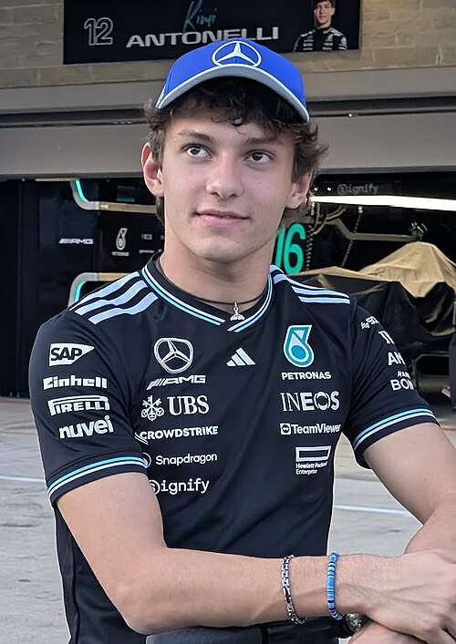
ANT Andrea Kimi Antonelli 219 pts -
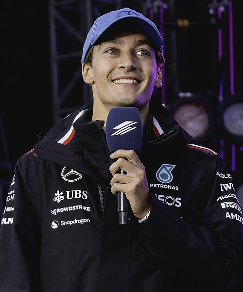
RUS George Russell 160 pts
Ferrari
307points
-
HAM Lewis Hamilton 169 pts
-
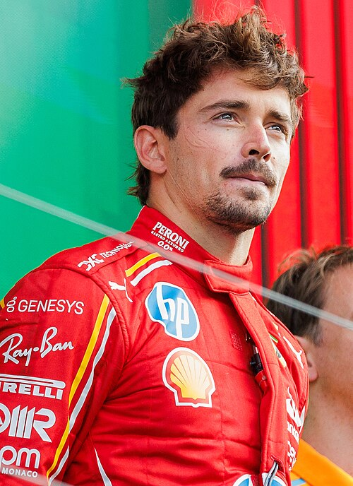
LEC Charles Leclerc 138 pts
McLaren
220points
-
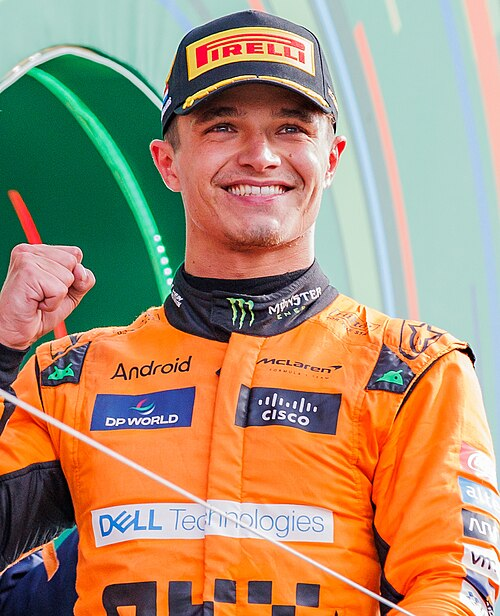
NOR Lando Norris 128 pts -
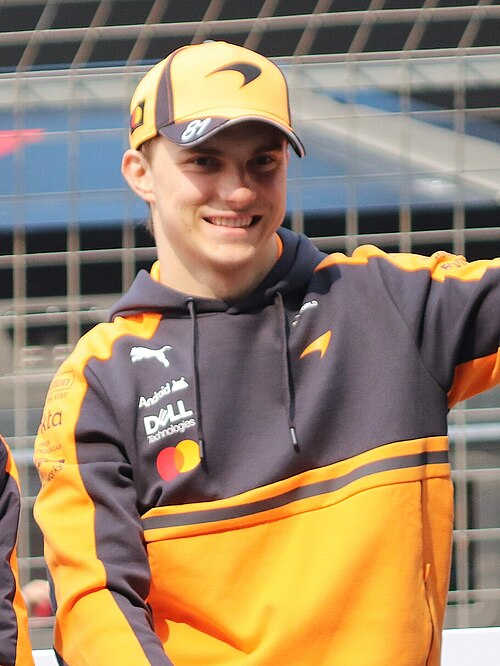
PIA Oscar Piastri 92 pts
Red Bull
177points
-
 VER Max Verstappen 109 pts
VER Max Verstappen 109 pts -
 HAD Isack Hadjar 68 pts
HAD Isack Hadjar 68 pts
RB F1 Team
66points
-
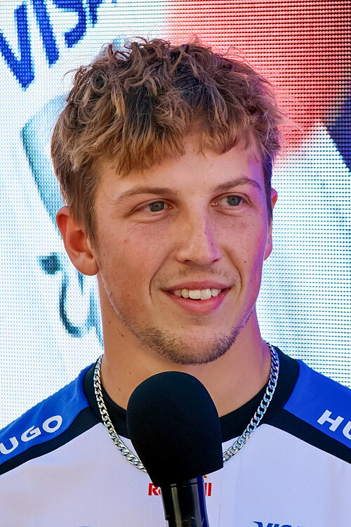
LAW Liam Lawson 43 pts -
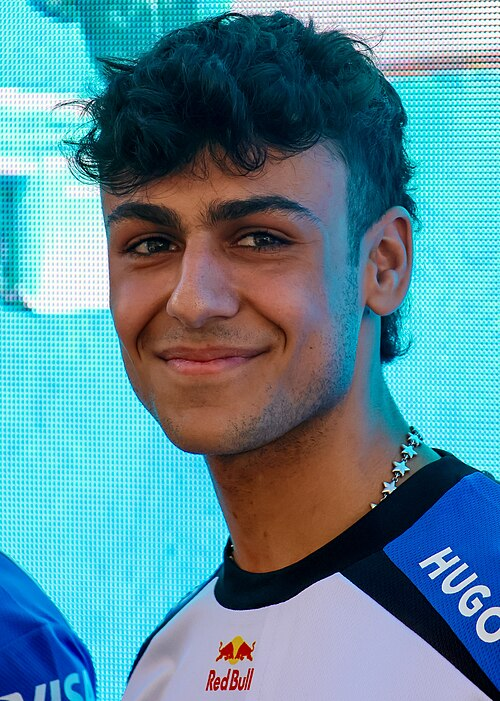
LIN Arvid Lindblad 23 pts
Alpine F1 Team
61points
-
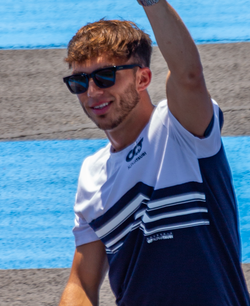
GAS Pierre Gasly 42 pts -
COL Franco Colapinto 19 pts
Haas F1 Team
21points
-
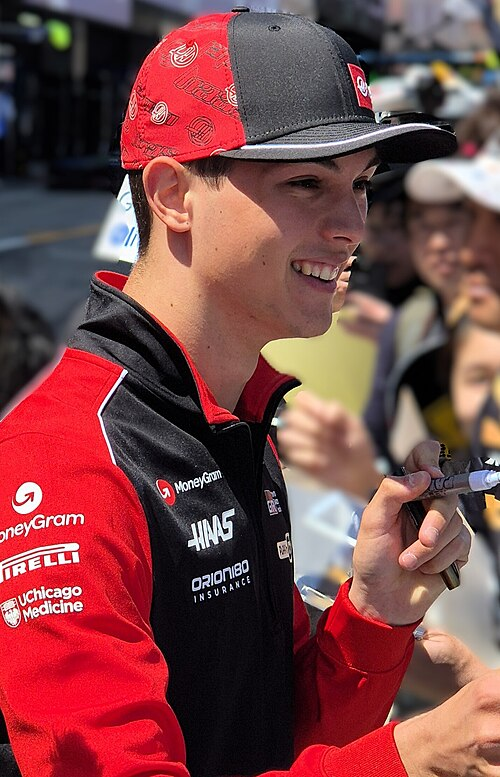
BEA Oliver Bearman 18 pts -
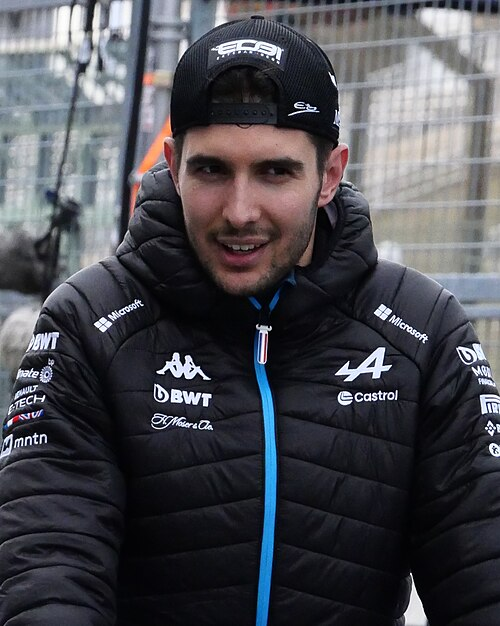
OCO Esteban Ocon 3 pts
Audi
12points
-
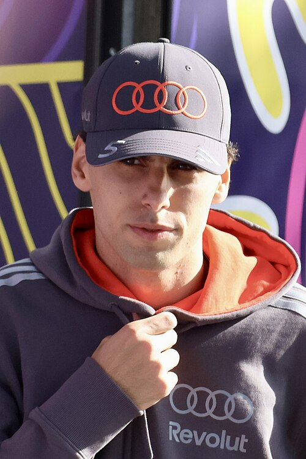
BOR Gabriel Bortoleto 10 pts -
 HUL Nico Hülkenberg 2 pts
HUL Nico Hülkenberg 2 pts
Williams
11points
-
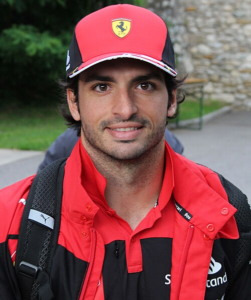
SAI Carlos Sainz 6 pts -
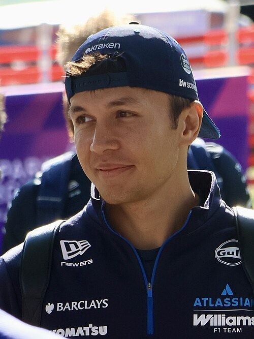
ALB Alexander Albon 5 pts
Aston Martin
1points
-
ALO Fernando Alonso 1 pts
-
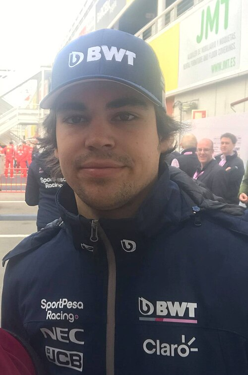
STR Lance Stroll 0 pts
Cadillac F1 Team
0points
-
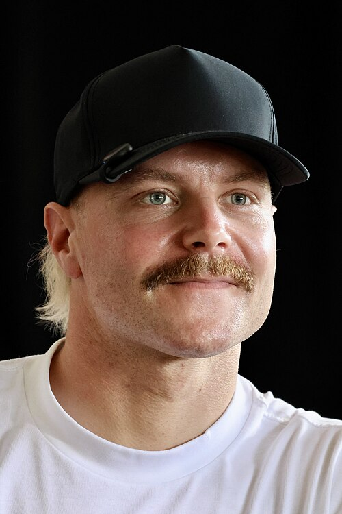
BOT Valtteri Bottas 0 pts -
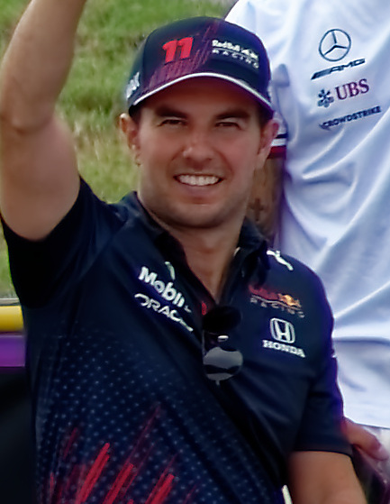
PER Sergio Pérez 0 pts